그림으로 말하기
요즘 모델은 멀티모달이라 글뿐 아니라 이미지도 읽고, 이미지를 만들 수도 있어요. 화이트보드 왼쪽의 문서 아이콘과 그림 아이콘이 함께 로봇으로 들어가고, 로봇이 다시 그림을 내놓는 흐름이 그 뜻이에요.
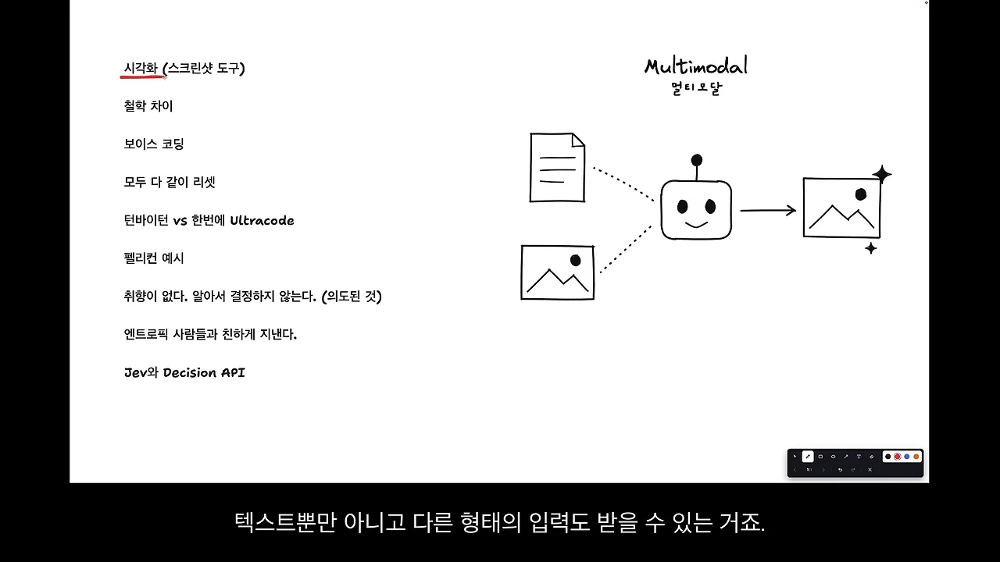
행사에서 강조한 건 이 능력을 대화에 쓰라는 거였어요. OpenAI 개발자들은 각자 스크린샷 도구를 직접 만들어 쓴다고 해요. 발표자도 비슷하게 일해요. UI(User Interface)에서 마음에 안 드는 곳이 있으면 화면을 찍고 그 위에 낙서로 표시해서 고쳐 달라고 던져요. 브라우저에서 모르는 게 생기면 화면 전체를 찍어서 보내요.
아래 그림에서 Button에 동그라미를 치고 'Fix!'라고 적은 화살표가 로봇으로 가는 부분이 바로 그 방식이에요. 아래쪽에는 글 말풍선 옆에 물음표, 그림 말풍선 옆에 느낌표를 붙였어요. 글로 말하면 헷갈리고, 그림으로 보여 주면 바로 통한다는 대비예요.
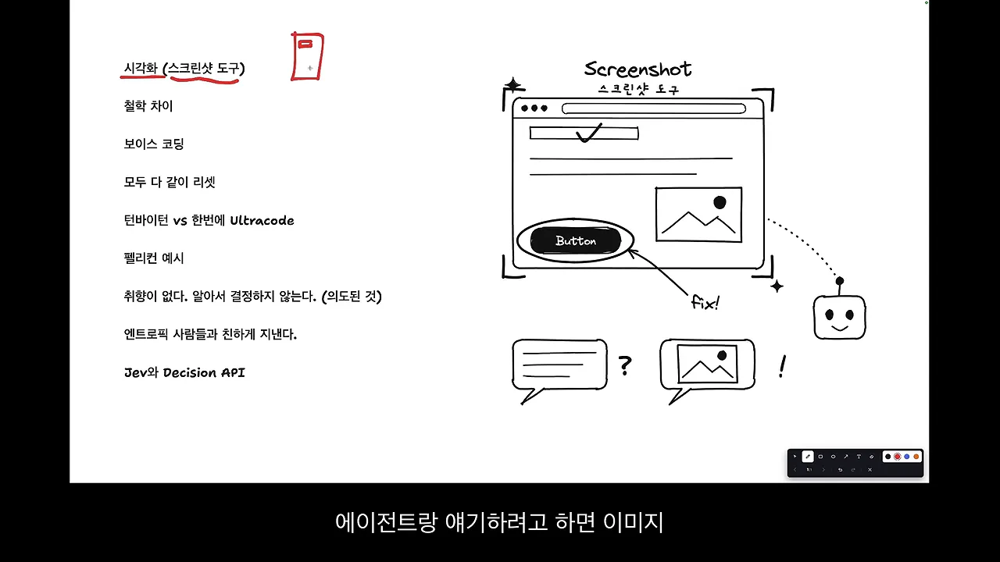
GPT는 일부러 취향을 빼요
OpenAI 직원은 OpenAI와 Anthropic이 모델을 만드는 철학이 다르다고 했어요. GPT와 Codex는 '취향이 없게' 만들었다는 거예요. 사람이 시킨 것 밖으로 자기 주관을 넣지 않고, 시킨 범위 안에서만 처리하도록 일부러 설계했대요.
화이트보드가 이 차이를 잘 보여 줘요. 왼쪽 GPT · Codex 아래에는 Instruction following(시킨 범위만)이라고 쓰고, 점선으로 그린 범위(Scope) 안에 칸 세 개만 놓았어요. 오른쪽 Claude 아래에는 Opinionated(자기 취향)라고 쓰고, 점선 범위 밖으로 칸 두 개가 더 튀어나가 있어요.
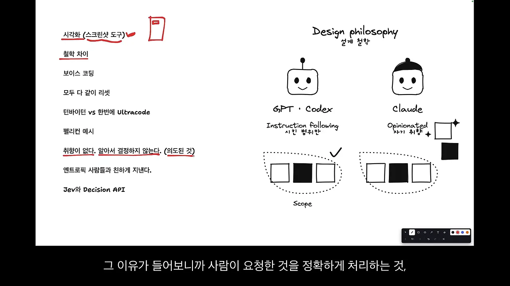
이유는 사람이 요청한 걸 정확히 처리하고, 의도하지 않은 일을 하지 않게 하는 걸 가장 중요하게 보기 때문이에요. 발표자는 영상 끝에서 이 이야기를 다시 꺼내요. GPT와 Claude가 다르게 느껴졌던 게 실력 차이가 아니라 의도된 설계 차이였다는 거예요.
| GPT · Codex | Claude | |
|---|---|---|
| 화이트보드 표현 | Instruction following · 시킨 범위만 | Opinionated · 자기 취향 |
| 일하는 범위 | 요청한 범위 안에서만 | 요청 밖으로 자기 판단을 더해요 |
| 설명 | OpenAI 직원이 '의도된 설계'라고 했어요 | 발표자가 GPT와 비교하며 느낀 차이예요 |
목소리로 말하기, 그리고 Always on
보이스 코딩은 OpenAI 직원이 아니라 다른 세션 발표자가 한 이야기예요. 보이스 코딩을 많이 한다는 발표가 있었고, 영상의 발표자도 보이스 프롬프팅을 많이 쓴다고 해요. 생각을 두서없이 말로 다 던져 놓고, 정리는 에이전트에게 맡기는 식이에요.
화이트보드에는 마이크에서 나온 음파가 로봇으로 가고, 로봇 옆에 체크리스트가 생기는 그림이 있어요. 말로 던진 생각이 정리된 할 일 목록이 된다는 뜻이에요.
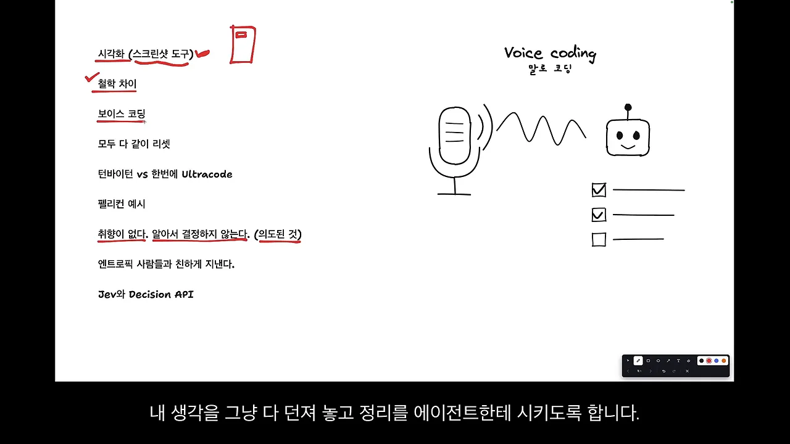
발표자는 의사 전달이 훨씬 빠르다는 점을 확실한 장점으로 꼽아요. 다만 항상 말로 하는 게 정답은 아니에요. 손으로 치기 피곤하면 말로, 말하기 피곤하면 타이핑으로 고를 수 있다는 선택지가 생긴 것 자체가 중요하다고 봐요.
Always on
Always on은 행사 발표 내용이 아니라 발표자 본인의 생각이에요. 음성 인식이 늘 켜져 있으면 지나가다 말을 걸어 일을 시키고, 다시 물어보면 답을 듣는 식으로 일할 수 있어요. 그림의 귀와 'ON' 스위치가 '늘 듣고 있음'을, 말풍선이 로봇으로 갔다가 답 말풍선이 돌아오는 화살표가 그 대화를 나타내요.
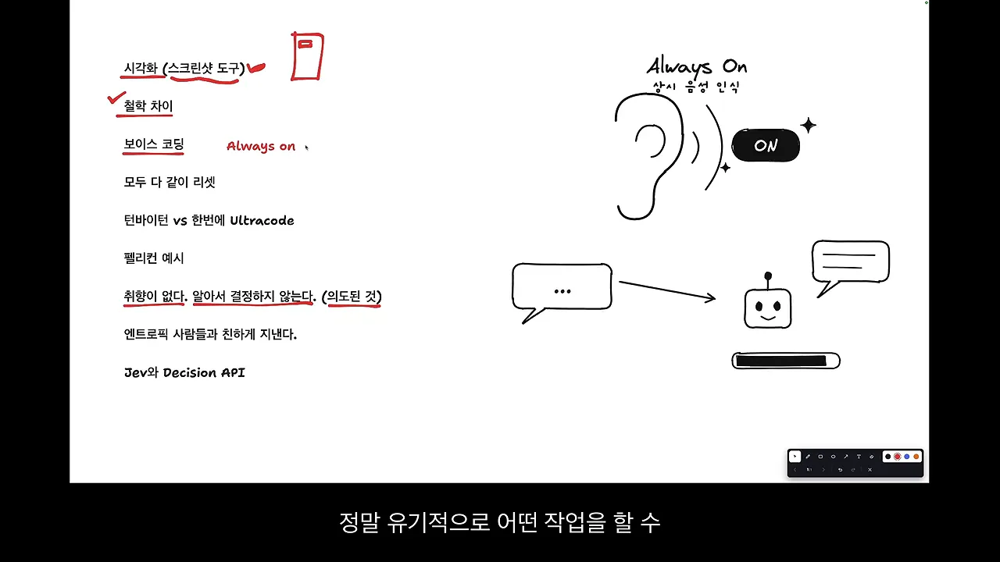
발표자는 이렇게 일하려면 기본 입력 방식이 목소리가 돼야 한다고 봐요.
다 같이 리셋, 그리고 한 단계씩
AI(Artificial Intelligence) 이전에는 무엇을 하든 어느 정도 정해진 로드맵이 있었고, 각자 쌓아 온 경력이 있었어요. 행사에서는 AI 시대가 오면서 모두가 함께 리셋된 상황이라는 이야기가 나왔어요.
화이트보드는 'RESET' 버튼 아래에 '쌓아 온 경력'을 놓고, 높이가 조금씩 다른 칸들을 그렸어요. 오른쪽 위 Gap(격차) 화살표가 가리키는 칸 높이 차이가 크지 않다는 게 요점이에요.
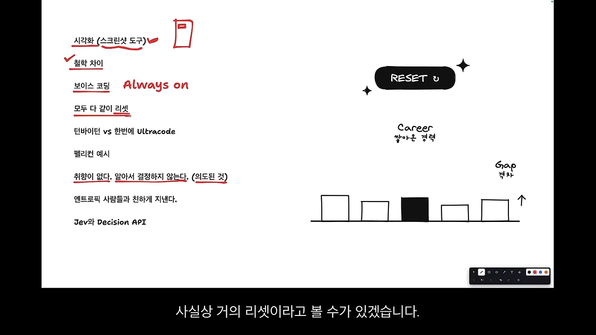
발표자도 공감해요. 지식이 많은 사람이 여전히 조금 유리하지만 그 격차가 갈수록 의미가 없어진다고 느꼈대요. 그래서 자신도 리셋된 상황을 받아들이고, 모든 사람과 똑같이 경쟁을 다시 시작한다고 생각하게 됐다고 해요.
한 번에 말고, 한 단계씩
많은 사람이 '딸깍' 한 번으로 뭔가를 다 만들려다 실망해요. OpenAI 직원은 턴바이턴, 즉 한 단계씩 진행시키면 뭐든 만들 수 있다고 했어요. 화면 목록에는 이 항목이 '턴바이턴 vs 한번에 Ultracode'라고 적혀 있어요.
그림 왼쪽 One-shot(한 번에)은 딸깍 버튼 위로 칸들이 흩어져 무너져 있고 X 표시가 붙었어요. 오른쪽 Turn-by-turn(한 단계씩)은 칸을 하나씩 쌓아 탑을 만들고, 그 옆에 Iteration(반복 수정)과 되돌아오는 화살표가 있어요.
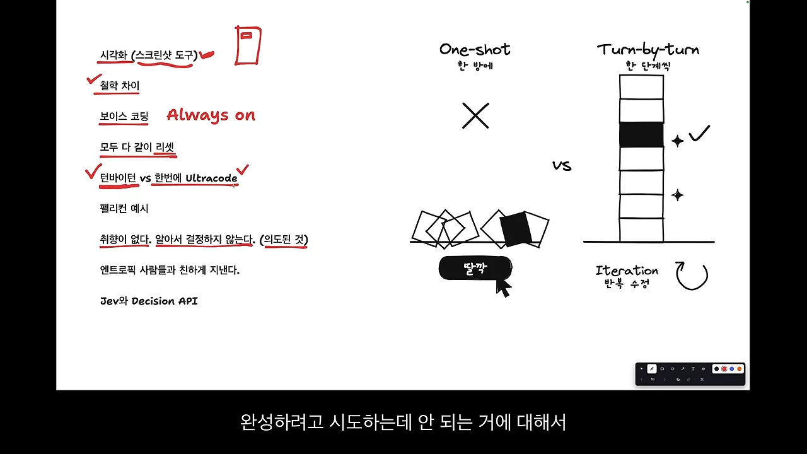
발표자도 같은 생각이에요. 요즘 게임 개발을 시도하고 있는데, 게임 개발 유튜버들도 한 번에 다 만들지 말고 이터레이션을 하라고 말한대요. 큰 작업을 아예 안 맡기는 건 아니지만, 한 단계씩 해도 시간이 비슷하게 걸린다면 한 방에 맡기는 건 다시 생각하게 됐다고 해요. 사람들이 한 방에 완성하려다 안 돼서 불만을 갖다 보니 이런 말이 나온 것 같다는 해석도 덧붙여요.
펠리컨 벤치마크와 Jev
새 모델이 나오면 '자전거 타는 펠리컨'을 SVG(Scalable Vector Graphics)로 그려 보는 게 일종의 벤치마크처럼 됐어요. 잘 그리면 잘하는 모델이라는 느낌으로요. 행사에서는 이 그림도 마음먹으면 잘 그리게 만들 수 있다는 이야기가 나왔어요.
화이트보드 오른쪽 계기판(Benchmark) 아래에 Benchmaxxing이라고 적혀 있고, 펠리컨에서 점선이 reference 그림으로 이어져요. 펠리컨 참고 이미지를 잘 주기만 해도 결과가 좋아진다는 뜻이에요.
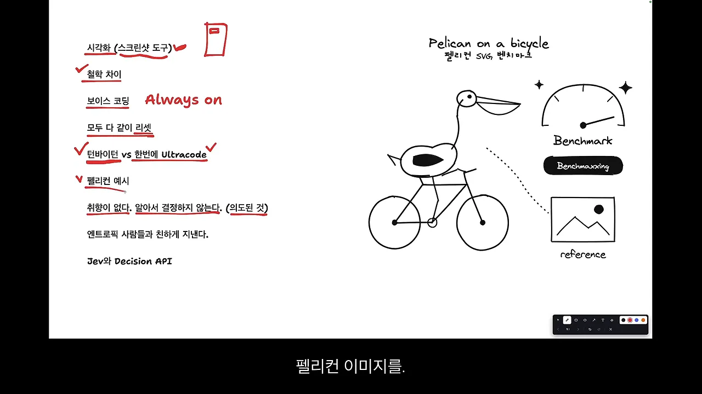
OpenAI 직원은 Anthropic 사람들과 친하게 지내고 적대 관계가 아니라고도 했어요. 발표자는 이 말이 왜 나왔는지는 기억나지 않는다고 해요. 화이트보드에는 OpenAI와 Anthropic 로봇 사이에 하트를 그리고 Not rivals(적대 관계 아님)라고 적었어요.
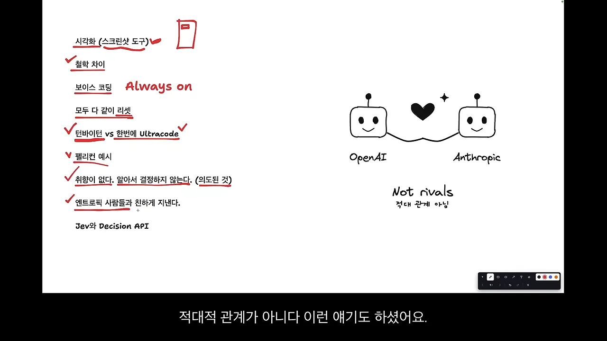
Jev와 Decisions API
Jev는 판단만 해 주고 대화는 못 하는 모델이에요. 발표자는 이런 모델을 시스템 1, 우리가 평소 쓰는 대화형 모델을 시스템 2라고 부른다고 설명해요. OpenAI도 Decisions API(Application Programming Interface)라는 시스템 1 성격의 제품을 내놓았어요.
그림 왼쪽 System 1(판단만) 로봇은 'YES' 하나만 내놓고 대화 아이콘에는 X가 쳐져 있어요. 오른쪽 System 2(대화) 로봇은 말풍선 두 개를 주고받아요. 아래에서는 Jev와 Decision API를 한 지붕 아래 넣고 Same family(같은 식구)라고 적었어요.
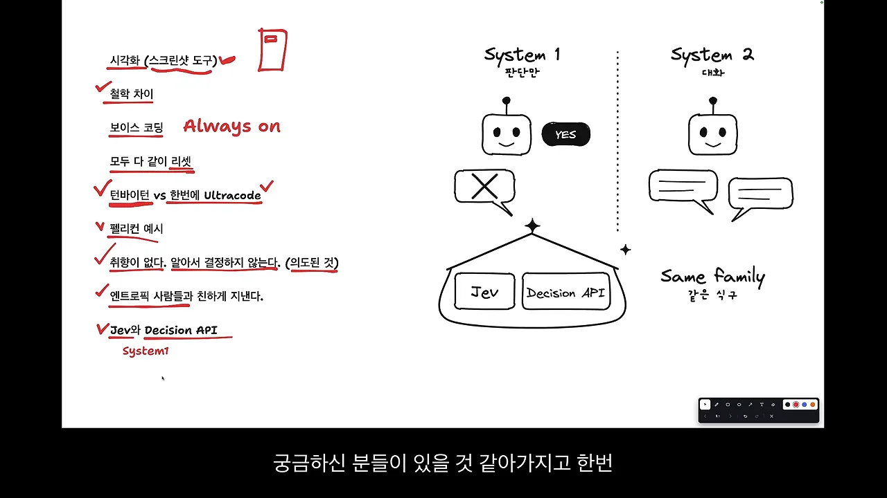
행사에서는 둘이 경쟁 관계냐는 질문이 나왔어요. 답은 경쟁이라고 생각하지 않는다는 거였어요. Jev를 만든 엔지니어가 원래 OpenAI 직원이라 같은 식구였고, Jev를 보고 좋아서 OpenAI도 만들게 됐다는 설명이에요. 발표자는 아직 Decisions API를 써 보진 않았다고 해요.
결국 기본기, 그리고 하네스
발표자는 오늘 들은 이야기에 새로운 내용은 크게 없다고 말해요. 대신 AI를 잘 쓰기 위한 기본기가 더 강조되고 있다고 느꼈대요. 화이트보드에는 Fundamentals(기본기)라는 지붕 아래 기둥 세 개를 세웠어요. Image, Voice, 그리고 CLAUDE.md · AGENTS.md예요.
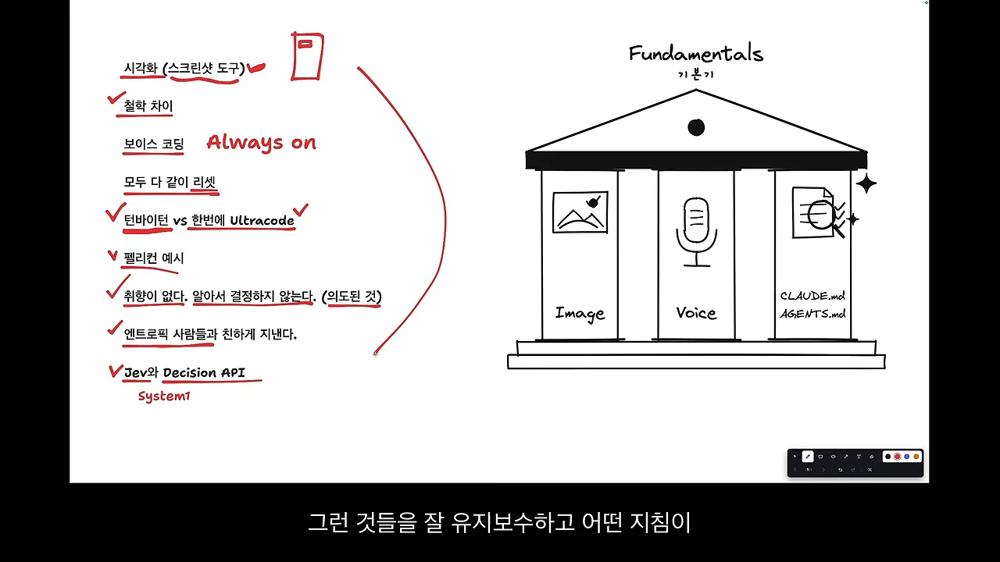
기둥 하나씩
이미지. 모델에게 이미지를 넘겨 해석하게 하는 건 꽤 오래전부터 됐어요. 문제는 사람들이 이걸 정말 잘 쓰느냐예요. AI가 못 알아듣는다고 불평하는 경우의 상당수는, 글로만 설명해서 생기는 한계라는 게 발표자의 진단이에요. 사람끼리도 참고 이미지나 영상 없이 말하면 서로 다르게 이해하잖아요.
목소리. 보이스 코딩이 맞는 흐름이라는 확신이 점점 서고 있다고 해요. 누가 맞다고 해서 하는 게 아니라, 일시적인 유행이 아니라는 거예요.
지침 파일. AGENTS.md, CLAUDE.md는 사실 제일 중요해요. 이걸 제대로 세팅하지 않고 하네스를 쌓는 건 핵심을 빼놓고 엉뚱한 걸 챙기는 셈이라고 봐요. 발표자는 모델이 새로 나오거나 하네스가 낡았다 싶으면 글로벌 지침부터 다시 검토시켜요. 최신 유행 도구에 눈이 가다 보면 이런 유지보수를 놓치기 쉽다는 거예요.
하네스와 모델은 세트
마지막으로 나온 이야기는 하네스와 모델이 함께 간다는 거예요. 저울 그림 왼쪽 접시에 Harness, 오른쪽 접시에 Model을 올려 균형을 맞췄어요.
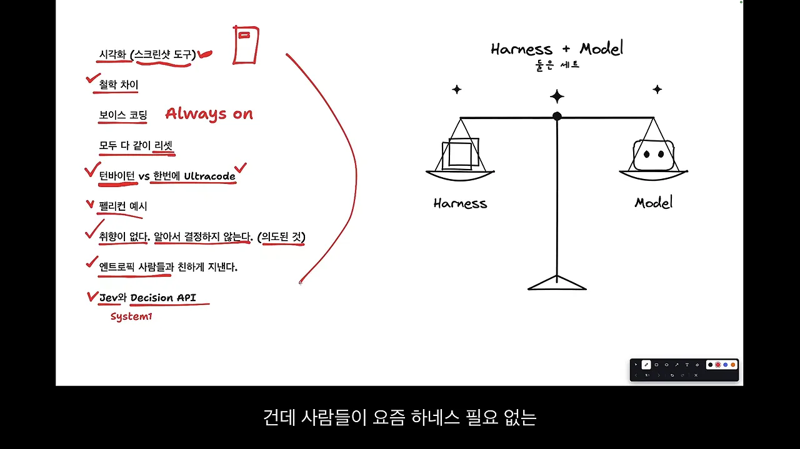
요즘 하네스가 필요 없지 않냐는 말이 나오다 보니 이 이야기가 다시 나온 것 같다고 발표자는 봐요. 그러면서도 본인은 하네스를 가볍게 줄이는 중이라고 해요. 예전에 넣어 둔 규칙이 새로운 시도를 막을 때가 있어서예요. 그림의 Lightweight(경량화) 체크리스트에서 두 줄에 취소선이 그어진 게 그 모습이에요.
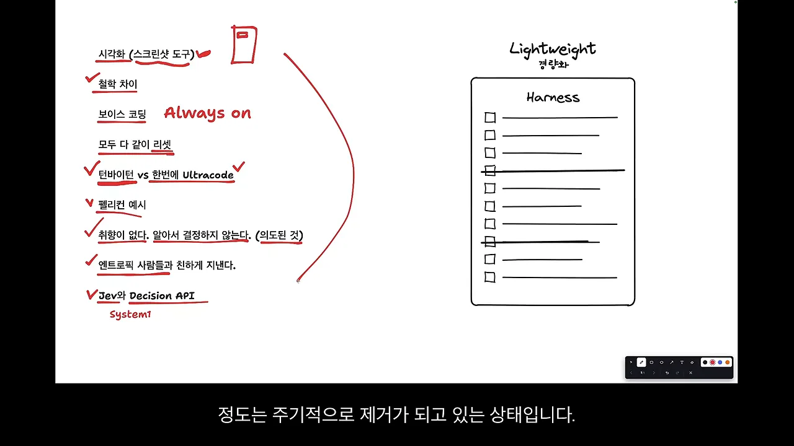
누가 한 말인가요
발표자는 OpenAI 직원 말과 다른 세션 이야기, 자기 생각이 섞여 있다고 밝혀요. 영상에서 출처를 말한 만큼만 나누면 이래요.
| 주제 | 누구의 이야기인가요 |
|---|---|
| 개발자들이 스크린샷 도구를 만들어 써요 | OpenAI 직원 |
| GPT·Codex는 취향이 없어요 | OpenAI 직원 |
| 보이스 코딩을 많이 해요 | 다른 세션 발표자 |
| Always on | 영상 발표자 본인 생각 |
| 다 같이 리셋 | 행사에서 나온 이야기 (발표자 공감) |
| 턴바이턴이면 뭐든 만들어요 | OpenAI 직원 |
| Jev와 Decisions API는 같은 식구예요 | 행사 질의응답 |
| 지침 파일과 하네스 경량화 | 영상 발표자 본인 경험 |
발표자는 AI 개발에는 정해진 정답이 없고, 오늘 맞다고 생각한 게 내일 바뀔 수 있다는 말로 마무리해요. 의견이 다르면 그게 당연하다고 덧붙여요.